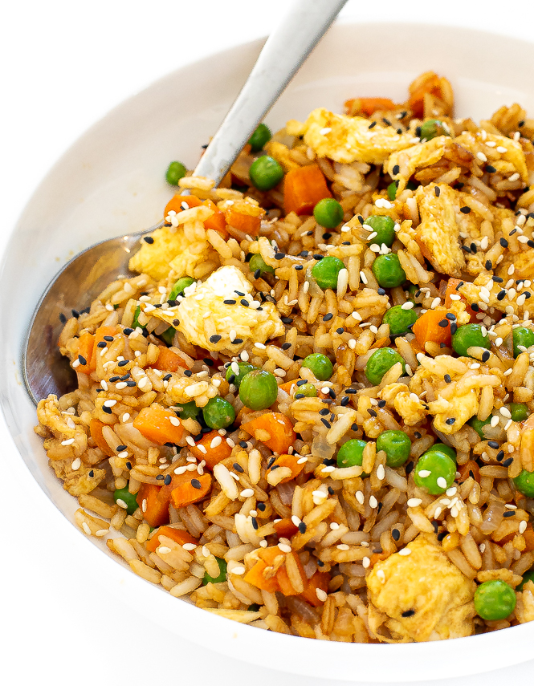

Fried Rice

Description
An ideal choice for using up leftover rice in the fridge, along with some eggs, peas,
carrots, and garlic, fried rice is a quick, inexpensive, and very delicious meal for
the weeknights. You can also add in some leftover proteins to make the meal more filling,
and spare your wallet from more takeout this week.
This recipe will teach you how to make fried rice at home, no wok required(though using
a wok is a great way to cook this dish!), and I will even include instructions should you
not have any leftover rice on hand.
Ingredients
3 cups of chilled, leftover white rice
1 clove of minced garlic, or to taste
2 large eggs
2/3 cup of baby carrots
1/2 cup of frozen green peas
1 tablespoon soy sauce
2 tablespoons oyster sauce
2 tablespoons vegetable oil
1/2 tablespoon butter
green onions, to garnish
Steps
- Heat a large skillet to medium heat. Add in the butter. Once melted,
add the eggs, and scramble them. When the eggs are almost fully cooked
, remove from heat.
- Add half of the vegetable oil in the pan. Add the minced garlic and cook for about
30 seconds. Then add the carrots and peas into the pan. Cook for about 3-4 minutes,
to soften the vegetables.
- Before adding the rice, if it clumps together, break it up first.
It will make it easier to brown the rice in the pan.
- Add the remaining vegetable oil to the pan, and then add the rice. Spread it out
evenly across the pan to evenly brown the rice.
- Add in the soy sauce and the oyster sauce, and stir it evenly throughout the rice.
Add the eggs back into the pan. You may also add in any leftover protein at this point,
if you wish. Stir well, and cook for about 2 more minutes.
- Serve hot, and with green onions on top, as desired for garnish.